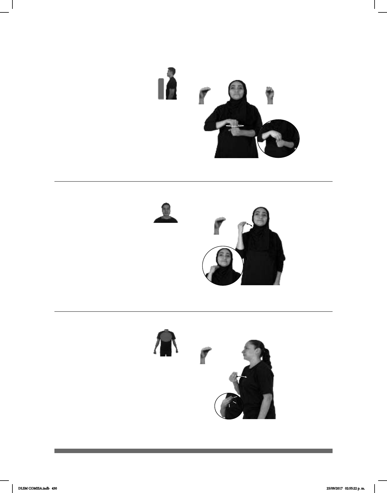

430
Abarrotado, da (O-7)
Seña: SM
O.5
Palma hacia adentro.
A la altura del cuello.
Movimiento: La mano golpea el
cuello en línea recta repetidamente.
sust. f. y m. Persona
que ha estudiado leyes y tiene como
profesión informar, orientar o
asesorar a otras personas en materia
jurídica.
Seña: SB
MD O.5, MB S.1
MD palma hacia abajo.
MB palma hacia adentro.
A la altura del pecho. MD
sobre MB.
Movimiento: La MD se mueve
formando círculos.
Cejas hacia
adj. Muy lleno; atiborrado,
atestado; colmado.
(O-8)
ESTADIO
izquierda
ABARROTADO
El estadio está abarrotado.
YA ABOGADO JUICIO GANAR YA
El abogado ganó el juicio.
Seña: SM
O.5
Palma hacia arriba.
A la altura del pecho.
Movimiento: La mano golpea el pecho
en línea recta repetidamente.
Cuerpo hacia
adelante.
v. tr. Resistir
actividades, cosas o situaciones que
resultan cansadas, pesadas, molestas
o que pueden alterar la salud.
(O-9)
__________________________________________neg___
pro-YO DECIR NO-PODER pro-YO DEBER AGUANTAR
No puedo decirlo, debo aguantarme.
DLSM COMISA.indb 430 25/09/2017 02:55:22 p. m.